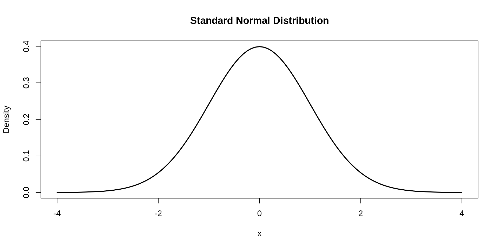
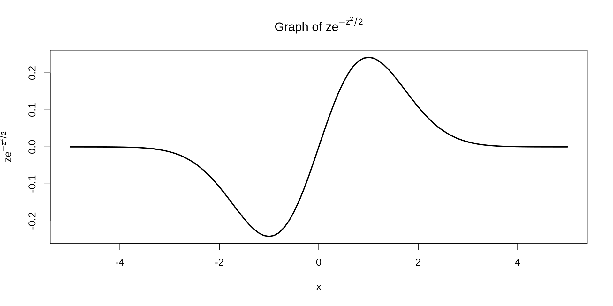
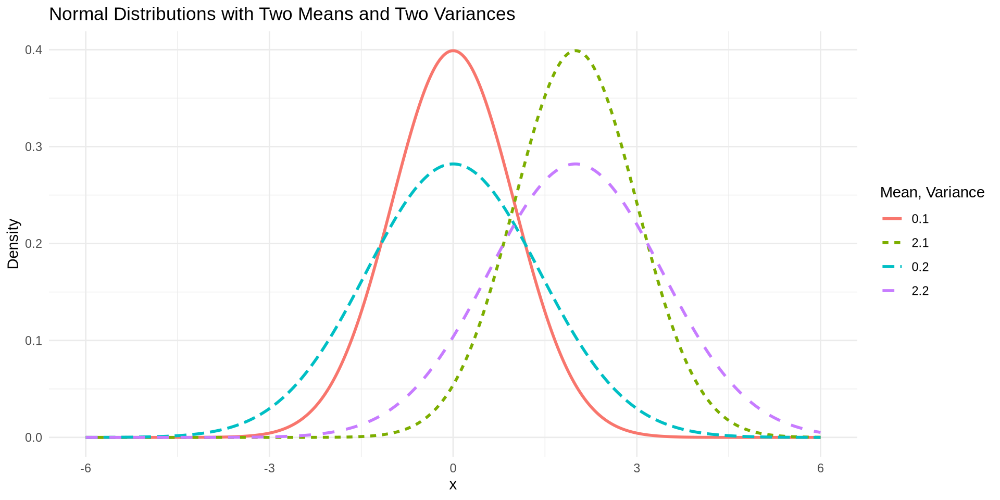

[1] 0.9522096[1] 0.9522096Definition 16.1
A standard normal distribution is used to model many natural phenomena. A standard normal random variable has the following PDF:
\[ f_Z(z) = \frac{1}{\sqrt{2\pi}} e^{-z^2 / 2}, \quad z \in \mathbb{R} \]
and the following CDF:
\[ F_Z(z) = P(Z \leq z) = \int_{-\infty}^{z} \frac{1}{\sqrt{2\pi}} e^{-t^2 / 2} dt = \Phi(z) \]
The mean and variance of a standard normal random variable are:
\[ \begin{align} \text{E}[Z] &= 0 \\ \text{Var}[Z] &= 1 \end{align} \]

\[ \begin{align} \text{E}[Z] &= \frac{1}{\sqrt{2\pi}} \int_{-\infty}^{\infty} z e^{-z^2/2} \, dz = \frac{1}{\sqrt{2\pi}} \left[-e^{-z^2/2}\right]_{-\infty}^\infty = 0 \end{align} \]
One could also use the fact that \(g(z) = z e^{-z^2/2}\) is an odd function, meaning that \(g(z) = -g(-z)\).

To find \(\text{Var}[Z]\), you could first find \(\text{E}[Z^2]\) by using integration by parts with \(u = z\) and \(dv = ze^{-z^2/2}\).
Theorem 16.1
Let \(Z \sim N(0, 1)\) be a standard normal random variable. For any constants \(\mu\) and \(\sigma\), the random variable \(X = \sigma Z + \mu\) follows a normal distribution:
\[ X \sim N(\mu, \sigma). \]
The \(\sim\) symbol is interpreted as “is distributed as” and can be used for any distribution. So the above means \(Y\) has a normal distribution with mean \(\mu\) and standard deviation \(\sigma\).
We have that \(g^{-1}(z) = \frac{x-\mu}{\sigma}\) so then:
\[ \begin{align} f_X(x) &= f_Z(g^{-1}(x))\left| \frac{d}{dx} g^{-1}(x) \right| \\ &= \frac{1}{\sqrt{2\pi}} e^{-\left(\frac{x-\mu}{\sigma}\right)^2 / 2} \left| \frac{d}{dx} \left(\frac{x-\mu}{\sigma}\right) \right| \\ &= \frac{1}{\sqrt{2\pi}} e^{-\left(\frac{x-\mu}{\sigma}\right)^2 / 2} \cdot \frac{1}{\sigma} \\ &= \frac{1}{\sqrt{2\pi \sigma^2}} e^{-\frac{1}{2\sigma^2}\left(x-\mu\right)^2} \end{align} \]
Definition 16.2
Let \(X\) be a normally distributed random variable with mean \(\mu\) and standard deviation \(\sigma\). The PDF for \(X\) is:
\[ f_X(x) = \frac{1}{\sqrt{2\pi \sigma^2}} e^{-\frac{1}{2\sigma^2}\left(x-\mu\right)^2} \text{ for } x \in (-\infty, \infty) \]
and the CDF is:
\[ F_X(x) = P(X \leq x) = \int_{-\infty}^{x} \frac{1}{\sqrt{2\pi \sigma^2}} e^{-\frac{1}{2\sigma^2}\left(t-\mu\right)^2} dt \text{ for } x \in (-\infty, \infty) \]
The mean and variance of a standard normal random variable are:
\[ \begin{align} \text{E}[X] &= \mu \\ \text{Var}[X] &= \sigma^2 \end{align} \]

\[ \begin{align} \text{E}[X] &= \int_{-\infty}^\infty x \frac{1}{\sqrt{2\pi \sigma^2}} e^{-\frac{1}{2\sigma^2}\left(x-\mu\right)^2} \ dx \\ &= \int_{-\infty}^\infty (z\sigma + \mu) \frac{1}{\sqrt{2\pi \sigma^2}} e^{-z^2/2} \cdot \sigma \ dz & \text{Letting } z = \frac{x-\mu}{\sigma} \\ &= \sigma \int_{-\infty}^\infty z \frac{1}{\sqrt{2\pi}} e^{-z^2/2} \ dz + \mu \int_{-\infty}^\infty \frac{1}{\sqrt{2\pi}} e^{-z^2/2} \ dz \\ &= \sigma \times 0 + \mu \times 1 \\ &= \mu \end{align} \]
We could also just recognize that \(X = \sigma Y + \mu\) meaning
\[ \text{E}[X] = \text{E}[\sigma Y + \mu] = \sigma\text{E}[Y] + \mu = \sigma \times 0 + \mu = \mu \]
Finally, we could use integration by parts to show that \(\text{E}[X^2] = \sigma^2 + \mu^2\) and then find \(\text{Var}[X]\), or we could show the following:
\[ \text{Var}[X] = \text{Var}[\sigma Y + \mu] = \sigma^2\text{Var}[Y] = \sigma^2 \]
Corollary 16.1
If \(X \sim N(\mu, \sigma)\) then \(Z = \frac{X-\mu}{\sigma}\) follows a standard normal distribution:
\[ Z \sim N(0, 1) \]
\[ \begin{align} f_Z(z) &= f_X(g^{-1}(z)) \left| \frac{d}{dz} g^{-1}(z) \right| \\ &= \frac{1}{\sqrt{2\pi \sigma^2}} e^{-\frac{1}{2}z^2} \left| \frac{d}{dz} \left(\sigma z + \mu \right) \right| \\ &= \frac{1}{\sqrt{2\pi \sigma^2}} e^{-\frac{1}{2}z^2} \cdot \sigma \\ &= \frac{1}{\sqrt{2\pi}} e^{-\frac{1}{2}z^2} \end{align} \]
Definition 16.3
A Z-score (or standard score) is a measure of how many standard deviations below or above a raw score is from the mean. If \(X\) is normal random variable with mean \(\mu\) and standard deviation \(\sigma\), then the Z-score for a specific value \(x\) is:
\[ z = \frac{x-\mu}{\sigma} \]
Example 16.1
A scientist is running simulations where the random variable \(X\) represents the weight (in kg) of a certain species of fish. The fish weights follow a normal distribution with a mean of \(\mu = 5\) kg and variance \(\sigma^2 = 4\) (hence, a standard deviation \(\sigma = 2\)).
However, the simulation software only generates values from a standard normal distribution. If \(Z\) represents the standard normal random variable generated by the software, how could you transform this into a normal random variable with mean \(\mu\) and standard deviation \(\sigma\).
The transformation is \(X = \sigma Z +\mu\) meaning that:
\[ X = 2Z + 5 \sim N(5, 2) \]
Example 16.2
You have a dataset with weights of adult emporer penguins, \(X\), which are normally distributed with an average weight of 40 kilograms and a standard deviation of 4 kilograms. You want to standardize these weights so they can be used as input into a machine learning algorithm that uses weight as a predictor of health outcomes for the penguins. How would you do this?
To standardize the weights you would use the transformation \(Z = \frac{X-\mu}{\sigma}\) which in this case would be:
\[ Z = \frac{X-40}{4} \sim N(0, 1) \]
Example 16.3
You have standardized scores for an assessment, but not the raw scores. You know that the mean of the raw scores is 80 with a standard deviation of 5. If someone’s standardized score on the test was a 2, what would be their raw score?
In this case we have that the raw scores have a mean of \(\mu = 80\) and a standard deviation of \(\sigma = 5\). We also know that the individuals scores is \(z = 2\). We can find their raw score as follows:
\[ \begin{align} x &= \sigma z + \mu \\ &= 5 \times 2 + 80 \\ &= 90 \end{align} \]
Example 16.4
The average number of words someone can read in a minute is around 120 and the standard deviation in the number of words read in a minute is 10. You find that someone reads 110 words per minute. What is the standardized value corresponding to 110 words per minute?
YOUR ANSWER HERE
Example 16.5
A student takes two exams: one in mathematics and one in physics. The mathematics exam scores are normally distributed with a mean of 75 and a standard deviation of 10, while the physics exam scores are normally distributed with a mean of 80 and a standard deviation of 8. The student got an 80 on the math exam and an 86 on the physics exam.
Which exam did the student perform better on, relative to their peers?
YOUR ANSWER HERE
Example 16.6
Two runners compete in different races. Runner A participates in a 5K race, where finishing times are normally distributed with a mean of 22 minutes and a standard deviation of 2.5 minutes. Runner B participates in a 10K race, where finishing times are normally distributed with a mean of 45 minutes and a standard deviation of 5 minutes.
Runner A finishes in 20 minutes, while Runner B finishes in 42 minutes.
Relative to their competition, which runner performed better?
YOUR ANSWER HERE
Example 16.7
Two investors track the performance of their stock portfolios over a year. Investor A holds stocks in Technology, where the annual returns are normally distributed with a mean of 12% and a standard deviation of 4%. Investor B holds stocks in Healthcare, where the annual returns are normally distributed with a mean of 8% and a standard deviation of 3%.
At the end of the year, Investor A’s portfolio has grown by 18%, and Investor B’s portfolio has grown by 13%.
Relative to their respective markets, which investor had a better performance?
YOUR ANSWER HERE
Corollary 16.2
If \(X\) is a normal random variable with mean \(\mu\) and standard deviation \(\sigma\) and \(Z\) is a standard normal random variable, then:
\[ P(X \leq x) = \Phi\left(\frac{x-\mu}{\sigma}\right) \]
For example, if \(X\) has a mean of 10 and a standard deviation of 3 and we want to find \(P(X \leq 15)\) using R, we can do this in two ways.
\[ \begin{align} P(X \leq x) &= P(X-\mu \leq x-\mu) \\ &= P\left(\frac{X-\mu}{\sigma} \leq \frac{x-\mu}{\sigma}\right) \\ &= P\left(Z \leq \frac{x-\mu}{\sigma}\right) \\ &= \Phi\left(\frac{x-\mu}{\sigma}\right) \end{align} \]
Example 16.8
Scores on an assessment are normally distributed with an average score of 75 and a standard deviation of 8. If you randomly select a test-taker, what is the probability that they scored lower than an 80?
Example 16.9
The time it takes for a package to be delivered by a shipping company follows a normal distribution with a mean of 3.5 days and a standard deviation of 1.2 days. If you randomly select a package, what is the probability that it takes more than 4 days to arrive?
Example 16.10
The fuel efficiency (in miles per gallon) of a certain model of car is normally distributed with a mean of 30 mpg and a standard deviation of 4 mpg. If you randomly select one of these cars, what is the probability that it gets between 30 and 34 mpg?
Definition 16.4
Let \(X\) be a random variable and let \(0 \leq p \leq 1\) represent a quantile or percentile of \(X\). The quantile function is a function that finds the value of \(x\) such that \(P(X \leq x) = p\). For a normal random variable, the quantile function is denoted as \(\Phi^{-1}(p)\).
For example, assume \(X\) is a normally distributed random variable with mean 20 and standard deviation 5 and say we want to find the 85% percentile of \(X\). This could be done in one of two ways:
Example 16.11
Assume that SAT scores are normally distributed with mean 1060 and standard deviation 195. You are told that an individual scored in the 90th percentile on the SAT. What was their score?
Example 16.12
The arrival times of flights at a busy airport are normally distributed with a mean delay of 10 minutes and a standard deviation of 6 minutes. A flight is reported to be in the 95th percentile of delay times. How many minutes late was the flight?
Example 16.13
The systolic blood pressure of adults in a certain population is normally distributed with a mean of 120 mmHg and a standard deviation of 15 mmHg. A doctor tells a patient that their systolic blood pressure is in the 85th percentile for adults. What is their blood pressure reading?